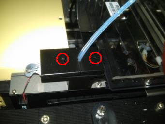
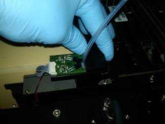
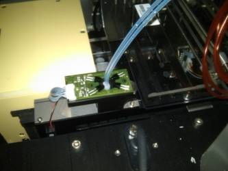
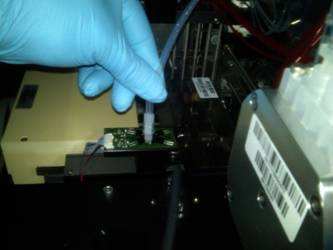
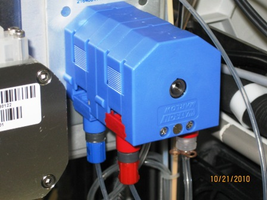

Parts and Materials Required
- Proper PPE
- Hex key, 2.5 mm
- OUTPUT Q, INJECTOR
Time Required
- 45 minutes
Removal Procedure
- Put on proper PPE.
- Power down the Panther System.
 Using a 2.5 mm hex key, unscrew the 2 screws that secure the 2 OLV covers.
Using a 2.5 mm hex key, unscrew the 2 screws that secure the 2 OLV covers.
- Remove both covers from the OLV board.


- Remove the injectors and place on an absorbent pad.

- Disconnect the fittings from the peristaltic pump.

- Remove the injectors.
The front channel of the peristaltic pump should have a red fitting and retaining clip indicating bleach.
The back channel of the peristaltic pump should have a blue fitting and retaining clip indicating wash buffer.
Replacement Procedure
- Reverse the removal procedure.
- Apply Grease to the Output Queue Injector
- Be sure to fit the alignment notch on the Output Queue into the tab located on the OLV housing.
- Connect the injectors into the OLV board.
- Replace the OLV board covers and tighten the 2.5 mm screws.
- Visually verify the Red outlet fitting of the Peristaltic Pump is routed and connected correctly to the Left position of the Output Queue OLV PCB.
Visually verify the Blue outlet fitting of the Peristaltic Pump is routed and connected correctly to the Right position of the Output Queue OLV PCB. - Verify that connections are properly seated and that screws are all in place.


Alignment/Calibration
- Prime Operation of pumping fluid through tubing to ensure proper and consistent fluid delivery (remove air from the tubing, etc.). the injectors through Service Software.
- Open service software. Select Distributor.
- Initialize all modules.
- Navigate to the Distributor tab > Move. Select the Push MTU Multi-tube unit—Container used to process tests in the instrument. An MTU contains five separate reaction tubes. The MTU is moved through the instrument by the linear distributor and includes five tiplets for pipettiing to be used in the mag wash station. button. Double-click on Input Queue to pick up an MTU and then double-click on Output Queue.
- Navigate to the Front and Loading Units tab. Under Output and next to Prime and Disp MTU select 552 µl, uncheck the OLV trace box and click Prime and Disp.
- Pull out the MTU and verify that liquid is present in the MTU.
- Repeat the priming procedure if dispense levels do not appear to be even or the lines do not appear to be fully primed.
- Calibrate the Output Queue OLV PCB.
Verification
- Perform a module Operational Qualification.
- Start the Panther System main software and Prime the system (see the Panther System Operator's Manual).
 button at the top of the page to send feedback, comments, or change requests.
button at the top of the page to send feedback, comments, or change requests.{kind=link}